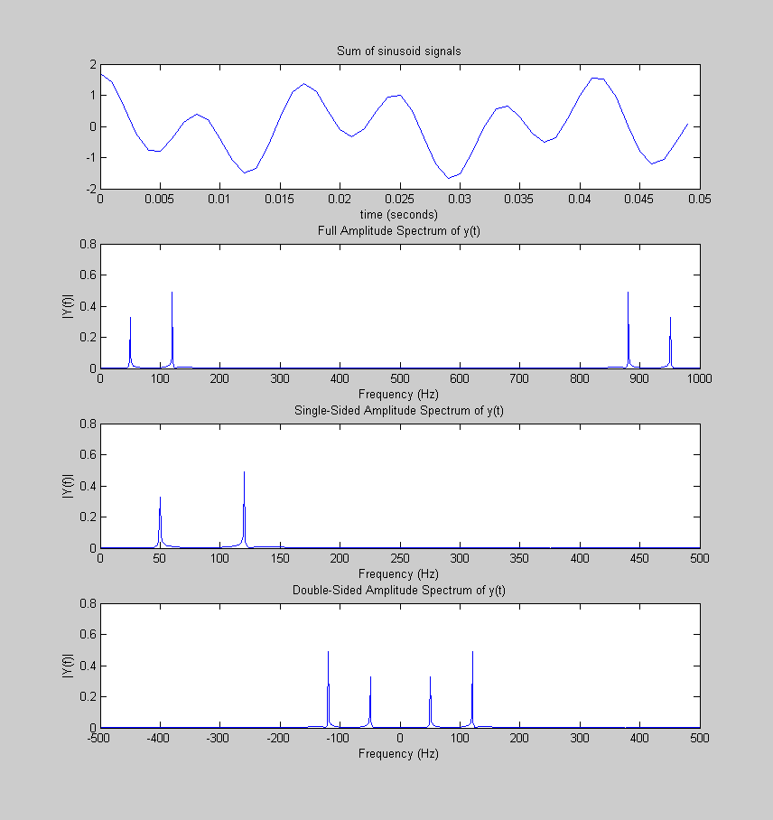

% for fft look under fft.pdf under engineering docs clear clc % xxxxx % note: % also see page 75 computer exploration book % % where N samples were taken from x which was non zero for only T secs % then timeperiod for each sample tau=T/N % % it also means that max amount of freq that can detected in this % sampling is 2pi/tau % % which implies w is taken from 2*pi*k/(T=N*tau) where k varies from 0:N % i.e it will be 0,2pi/N*tau=2pi/T,2pi2/N*tau = 2pi2/T, % 2piN/T=2piN/N*tau=2pi/tau % % where 2pi/tau is sample freq % % wk varies as 2pik/(T=N*tau) for 0<=k<=N % % for descrete times we do not consider the effect of intermediat time values % we take tau to be equal to 1 % % hence wk varies from 0,2pi/N,2pi2/N...2pi % % w=2pik/N for 0<=k<=N Fs = 1000; % Sampling frequency T = 1/Fs; % Sample time L = 1000; % Length of signal t = (0:L-1)*T; % Time vector % Sum of a 50 Hz sinusoid and a 120 Hz sinusoid y = 0.7*cos(2*pi*50*t) + cos(2*pi*120*t); % Next power of 2 from length of y nfft = 2^nextpow2(L); % Normalized fft => fft/N returns ak see page 47 on exploration book Y = fft(y,nfft)/L; % shifted y Ys = fftshift(fft(y,nfft))/L; % The FFT contains information between 0 and fs from the fft.pdf in % engineering docs folder on desktop f = (Fs)*linspace(0,1,nfft); % to get only one side of the spectrum fhalf=(Fs/2)*linspace(0,1,nfft/2+1); % shifted frequencies fs_half=(Fs/2)*linspace(-1,1,nfft); figure(1) clf subplot(411) plot(t(1:50),y(1:50)) title('Sum of sinusoid signals') xlabel('time (seconds)') subplot(412) plot(f,abs(Y)) title('Full Amplitude Spectrum of y(t)') xlabel('Frequency (Hz)') ylabel('|Y(f)|') % Plot single-sided amplitude spectrum. subplot(413) plot(fhalf,abs(Y(1:nfft/2+1))) title('Single-Sided Amplitude Spectrum of y(t)') xlabel('Frequency (Hz)') ylabel('|Y(f)|') subplot(414) plot(fs_half,abs(Ys)) title('Double-Sided Amplitude Spectrum of y(t)') xlabel('Frequency (Hz)') ylabel('|Y(f)|') return